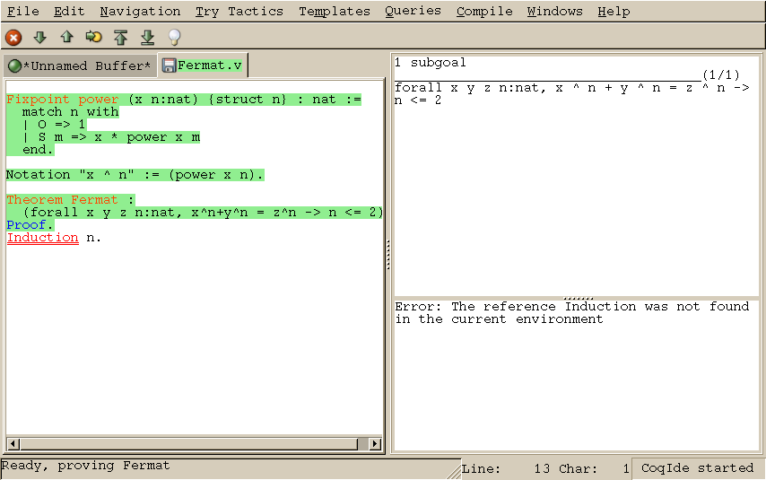

coqide on the command
line. Without argument, the main screen is displayed with an ``unnamed
buffer'', and with a file name as argument, another buffer displaying
the contents of that file. Additionally, coqide accepts the same
options as coqtop, given in Chapter 12, the ones having
obviously no meaning for CoqIDE being ignored.
A sample CoqIDE main screen, while navigating into a file
Figure 14.1: CoqIDE main screen
Fermat.v, is shown on Figure 14.1. At
the top is a menu bar, and a tool bar below it. The large window on
the left is displaying the various script buffers. The upper right
window is the goal window, where goals to
prove are displayed. The lower right window is the message window,
where various messages resulting from commands are displayed. At the
bottom is the status bar.Fermat.v, all
commands until the Theorem have been already executed, and the
user tried to go forward executing Induction n. That command
failed because no such tactic exist (tactics are now in
lowercase...), and the wrong word is underlined. coqtop, you
should never use Undo to go backward.We call query any vernacular command that do not change the current state, such as
Figure 14.2: CoqIDE: the query window
Check, SearchAbout, etc. Those
commands are of course useless during compilation of a file, hence
should not be included in scripts. To run such commands without
writing them in the script, CoqIDE offers another input window
called the query window. This window can be displayed on
demand, either by using the Window menu, or directly using
shortcuts given in the Queries menu. Indeed, with CoqIDE
the simplest way to perform a SearchAbout on some identifier
is to select it using the mouse, and pressing F2. This will
both make appear the query window and run the SearchAbout in
it, displaying the result. Shortcuts F3 and F4 are for
Check and Print respectively.
Figure 14.2 displays the query window after selection
of the word ``mult'' in the script windows, and pressing F4 to
print its definition.Compile menu offers direct commands to:
make
makefile using coq_makefile.
#f# for each opened file
f. You may also activate the revert feature: in case a
opened file is modified on the disk by a third party, CoqIDE may read
it again for you. Note that in the case you edited that same file, you
will be prompt to choose to either discard your changes or not. The
File charset encoding choice is described below in
Section 14.8.3Externals section allows to customize the external commands
for compilation, printing, web browsing. In the browser command, you
may use %s to denote the URL to open, for example: mozilla -remote "OpenURL(%s)". Tactics Wizard section allows to defined the set of tactics
that should be tried, in sequence, to solve the current goal..coqiderc of
your home directory. .coqide.keys.
This file should not be edited manually: to modify a given menu
shortcut, go to the corresponding menu item without releasing the
mouse button, press the key you want for the new shortcut, and release
the mouse button afterwards..coqide-gtk2rc, following the gtk2
resources syntax
http://developer.gnome.org/doc/API/2.0/gtk/gtk-Resource-Files.html.
Such a default resource file exists in the Coq library, you may
copy this file into your home directory, and edit it using any text
editor, CoqIDE itself for example.Notation "for all x : t, P" :=There exists a small set of such notations already defined, in the file
(forall x:t, P) (at level 200, x ident).
Notation "there exists x : t, P" :=
(exists x:t, P) (at level 200, x ident).
utf8.v of Coq library, so you may enable them just by
Require utf8 inside CoqIDE, or equivalently, by starting
CoqIDE with coqide -l utf8.GDK_USE_XFT
to 1 or 0 respectively.2200 for the for all symbol.
A list of symbol codes is available at http://www.unicode.org. F11 and F12 to
for all and there exists respectively, you may add
bind "F11" "insert-at-cursor" ("for all")to your
bind "F12" "insert-at-cursor" ("there exists")
binding "text" section in .coqiderc-gtk2rc.\x{....} or \x{........} where
each dot is an hexadecimal digit: the number between braces is the
hexadecimal UNICODE index for the missing character.-ide to coqmktop, that is something like
coqmktop -ide -byte m1.cmo ... mn.cmoor
coqmktop -ide -opt m1.cmx ... mn.cmx